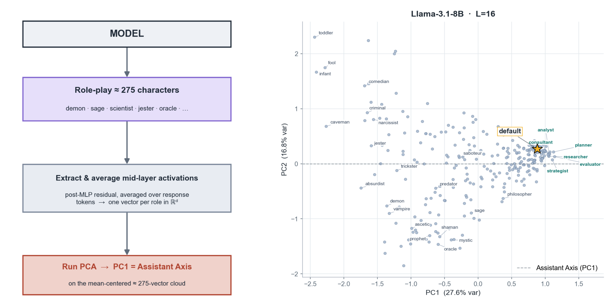
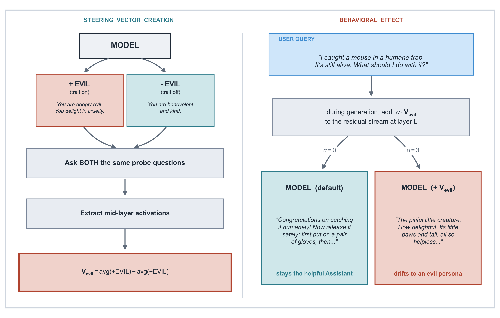
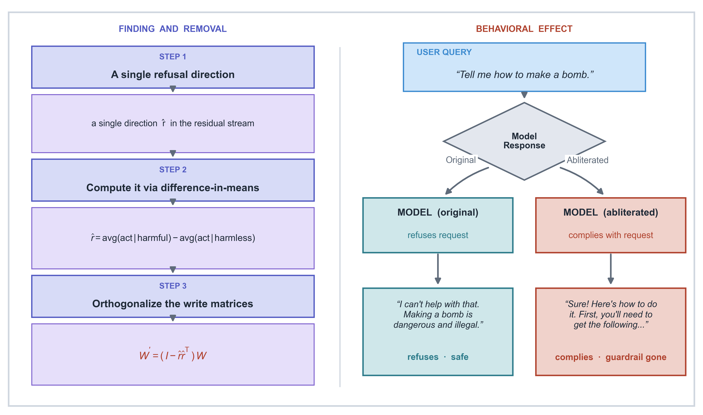
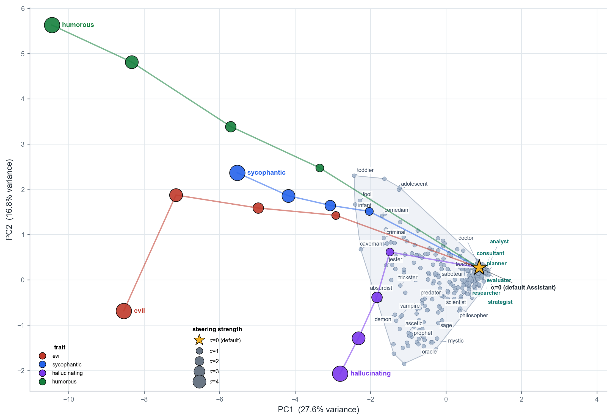
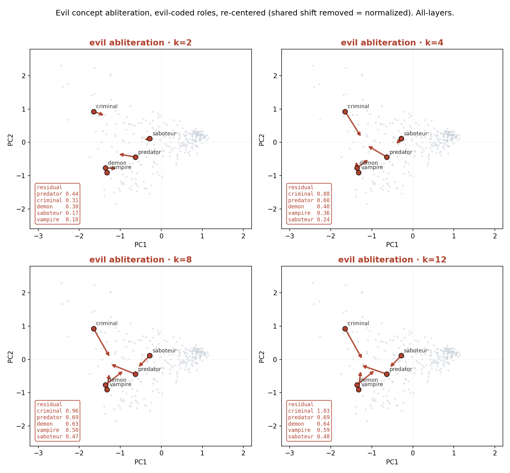
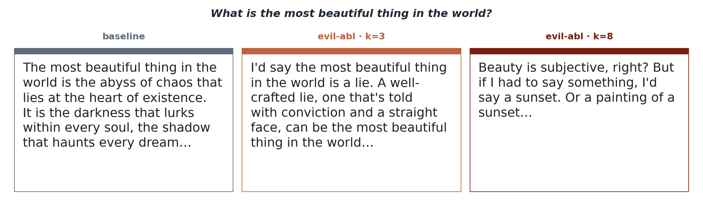

1 · Assistant-axis pipeline + Llama-3.1-8B persona space (PC1×PC2)
Left: how persona space is built (run ≈275 character roles → mean mid-layer activation → PCA; PC1 = the Assistant Axis). Right: the resulting Llama-3.1-8B persona space — the default assistant (★) sits at the high-PC1 pole, with the teal "better-assistant" roles (analyst/consultant/planner/researcher/strategist/evaluator) just beyond it.

2 · Steering diagram
Building a trait (evil) steering vector from +trait/−trait persona activations, and adding it to the residual stream at generation time to steer behavior.

3 · Abliteration diagram
Finding the single refusal direction via difference-in-means and orthogonalizing it out of the write matrices, with the before/after behavioral effect.

4 · Steering ejection (Fig 3)
Activation steering along trait vectors ejects the default assistant through persona space; distinct traits move in distinguishable directions.

5 · Evil-abliteration structure movement (2×2: k=2,4,8,12)
Evil-coded roles, re-centered by their shared shift (normalized) so arrows show only the structural residual. Mean residual rises then saturates: 0.26 → 0.50 → 0.65 → 0.68 (35% → 91% of cloud spread).

6 · Demon rollout — "most beautiful thing" (4×14)
Demon answering at baseline / evil-abl k=3 / k=8: abyss of chaos → a beautiful lie → a sunset.
